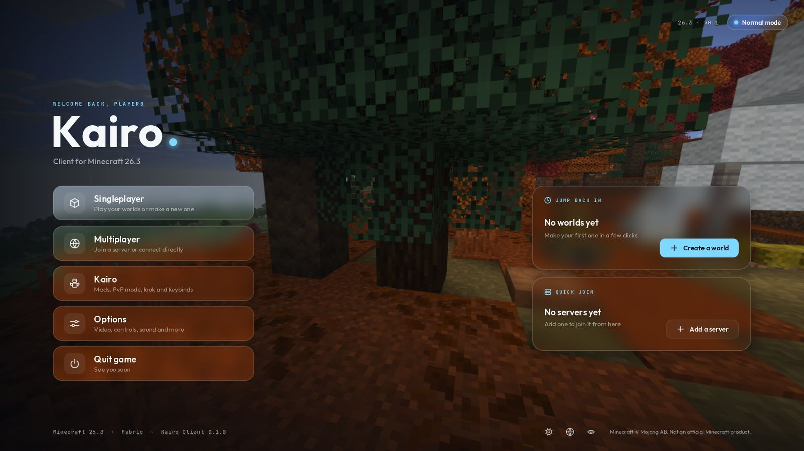

Kairo
Frosted glass everywhere, five main menu styles, colour filters, hit effects, capes, wings and 37 emotes. Clean enough to play with every day.
- 25+ mods and a drag-and-drop HUD
- PvP mode with its own layout
- 11 colour filters, bloom and motion blur